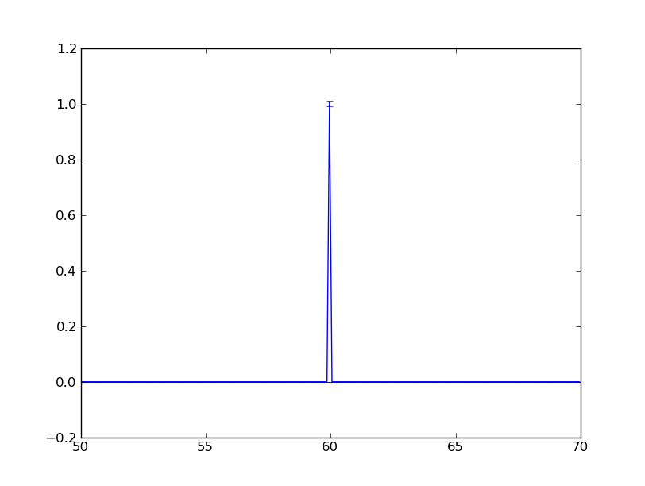

MCViNEMonte Carlo VIrtual Neutron Experiment |
By going through this tutorial you can get to know
Note
Experimental: you could also create your simulation application online at http://vnf-dev.caltech.edu/mcvine
The command in mcvine to create an instrument simulation application is “mcvine-create-instrument-simulation-application”. To start, try
$ mcvine-create-instrument-simulation-application -h
It will prints out some simple help about how to run this command.
To create a mcvine simulation application named “test” with two components, source and monitor, do
$ mcvine-create-instrument-simulation-application --name=test --components=source,monitor
A python application will be created and named “test”.
You can find out how to run this simulation application by
$ ./test -h
which outputs:
------------------------------------------------------------
* Instrument simulation application 'test'
------------------------------------------------------------
* Sequence of components:
[source] --> [monitor]
------------------------------------------------------------
* Command:
$ test \
--multiple-scattering=<if true, enable multiple scattering> \
--buffer_size=<size of neutron buffer. This is for optimizing the preformance of the simulation. When it is too large, it will occupy too much memory. When it is too small, the simulation will be slow. If you are not sure, please just leave it unset so that the default value will be used.> \
--output-dir=<output directory> \
--ncount=<number of total neutrons generated by source> \
--overwrite-datafiles=<overwrite data files?> \
--geometer.source=<position>,<orientation> \
--geometer.monitor=<position>,<orientation> \
--source=<component type> \
--monitor=<component type>
------------------------------------------------------------
Now, you can run this instrument by specifying more details of the instrument. For example:
$ ./test --source=MonochromaticSource --monitor=E_monitor
will run a simulation of an instrument with two components:
You can save your configuration of the simulation application to a file so that it is easier to rerun it. For example:
$ ./test --source=MonochromaticSource --monitor=E_monitor --dump-pml
will create a file “test.pml” in the current working directory.
Note
A pml file generated by the –dump-pml command line option contains the most current simulation configuraton. With its existence in the working directory, you can further fine-tune your simulation configuration and/or run it. A pml file is a xml file and it is quite easy to read using any text viewer/editor.
Note
If you run –dump-pml again, the old “test.pml” will be copied to a file named like “test.pml.saved-<time>”, and the “test.pml” will be overwritten.
With this configuration file at the current working directory, you don’t need to specify the same configuration again. For example, this command
$ ./test -h
now gives the following help message that includes knowledge of what the types of the components in the instrument component chain are:
------------------------------------------------------------
* Instrument simulation application 'test'
------------------------------------------------------------
* Sequence of components:
[source(sources/MonochromaticSource)] --> [monitor(monitors/E_monitor)]
------------------------------------------------------------
* Command:
$ test \
--multiple-scattering=<if true, enable multiple scattering> \
--buffer_size=<size of neutron buffer. This is for optimizing the preformance of the simulation. When it is too large, it will occupy too much memory. When it is too small, the simulation will be slow. If you are not sure, please just leave it unset so that the default value will be used.> \
--output-dir=<output directory> \
--ncount=<number of total neutrons generated by source> \
--overwrite-datafiles=<overwrite data files?> \
--geometer.source=<position>,<orientation> \
--geometer.monitor=<position>,<orientation> \
--source=<component type> \
--monitor=<component type> \
--source.probability=<probabliity of neutrons. unit: 1> \
--source.position=<position of neutrons. unit: m> \
--source.energy=<energy of the neutron. if "energy" is given, the neutron velocity will be computed so that the energy of the neutron will be the given value of energy,and the moving direction will be determined by the "velocity" vector> \
--source.time=<time of flight for neutrons. unit: s> \
--source.velocity=<velocity of neutrons. unit: m/s. Note: if energy is nonzero, the magnitude of the velocity is set by energy> \
--monitor.Emin=<Minimum energy to detect (meV) > \
--monitor.Emax=<Maximum energy to detect (meV) > \
--monitor.filename=<Name of file in which to store the detector image (text) > \
--monitor.nchan=<Number of energy channels (1) > \
--monitor.xmax=<Upper x bound of detector opening (m) > \
--monitor.xmin=<Lower x bound of detector opening (m) > \
--monitor.ymin=<Lower y bound of detector opening (m) > \
--monitor.ymax=<Upper y bound of detector opening (m) >
------------------------------------------------------------
You already see that we can specify what each of the components in the component chain are. The way we set the source component to a monochromatic source is by
--source=MonochromaticSource
And similarly, we can set the monitor
--monitor=E_monitor
To find out what are the component types you can use, run
$ mcvine-list-components
You can also tell the command to list components in specific category. For example
$ mcvine-list-components --category=monitors
To find out more information about a specific component you are interested in, run
$ mcvine-component-info --type=<component-type>
For example:
$ mcvine-component-info --type=E_monitor
Now, you could specify the position and orientation of a component by referring to “geometer”
--geometer.monitor=[0,0,1],[0,0,0]
The syntax is actually
--geometer.monitor=<position>,<orientation>
Position is a 3-vector, and the unit is meter. Orientation is a 3-vector that denotes three consecutive rotations along x, y, and z axes. The unit is degrees.
More details can found in Positioning of Components.
Each component has several parameters that define the scattering properties of the component. To find out the parameters for a component, use the command “mcvine-component-info”
$ mcvine-component-info --type=E_monitor
The output would be
======================================================================
E_monitor: Energy-sensitive monitor.
----------------------------------------------------------------------
A square single monitor that measures the energy of the incoming neutrons.
Example: E_monitor(name, xmin=-0.1, xmax=0.1, ymin=-0.1, ymax=0.1, Emin=1, Emax=50, nchan=20, filename="Output.nrj")
----------------------------------------------------------------------
Parameters:
* Emin: Minimum energy to detect (meV)
* Emax: Maximum energy to detect (meV)
* filename: Name of file in which to store the detector image (text)
* nchan: Number of energy channels (1)
* xmax: Upper x bound of detector opening (m)
* xmin: Lower x bound of detector opening (m)
* ymin: Lower y bound of detector opening (m)
* ymax: Upper y bound of detector opening (m)
======================================================================
If you want to change parameter “nchan”, for example, you will need
--monitor.nchan=10
So here is what you may want to do when you run your simulation:
$ ./test --monitor.nchan=10
You can also see what are the current parameters for the monitor by:
$ ./test --monitor.help-properties
Let us do a more careful configuration of the simulation and save it:
$ ./test --source.energy=60 \
--monitor.Emin=50 --monitor.Emax=70 --monitor.nchan=200 \
--dump-pml
And then we can run it for a little while:
$ ./test -ncount=1e4
When this command is run, output files will be generated in a directory specified by option “–output-dir” which by default is “out”. For this simulation, you should see a new file “out/IE.h5”. You can run command
$ PlotHist.py out/IE.h5
to see the output histogram.
.png){kind=link}